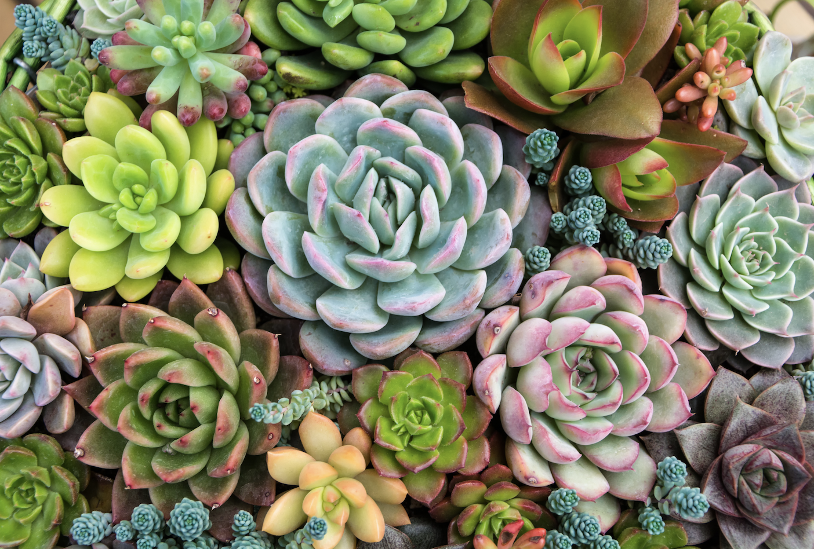
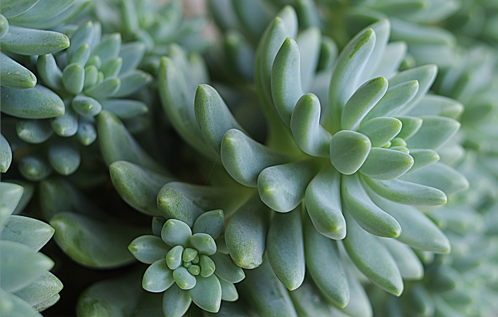
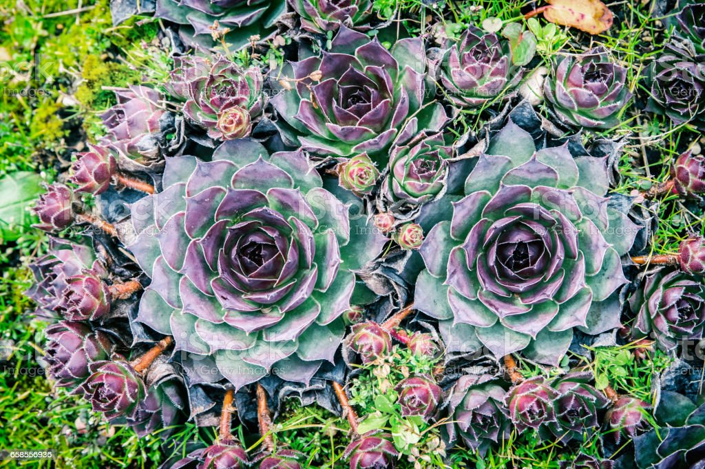

Echeveria
Native to parts of Central America, South America, and Mexico, echeverias are fast growing succulents popular for their unique appearance and low maintenance needs. They are well-suited to bright, dry environments making echeverias ideal houseplants. They require a substantial amount of light
Sedum
"Sedum" derives from the Latin "sedeo," meaning "to sit" and refers to the growing habit (to sit and sprawl over the rocks and walls) of many of the Sedums. Primarily native to rocky, mountainous environments in the Northern Hemisphere, but also in the southern hemisphere in Africa and South America. Because Sedums tolerate a wide range of harsh conditions, they make a good choice for many gardens. They are also excellent container plants. These succulents grow best in locations where they will enjoy the full sun at least six hours per day. Most species will tolerate partial shade but will not thrive in deep shade.
Sempervivum
Sempervivum succulents are commonly known as Houseleeks or Hen and Chicks. The Latin word 'Sempervivum' means 'always alive'. The color of the leaves varies from green, yellow, orange, pink, red, to brown. Plants need to be grown in full sun to exhibit the different colors fully. Sempervivums are among the most frost-resistant succulents, making them popular garden plants. They are an excellent choice as ground cover for rock gardens and xeriscaping but also grow very well in a range of different outdoor containers.